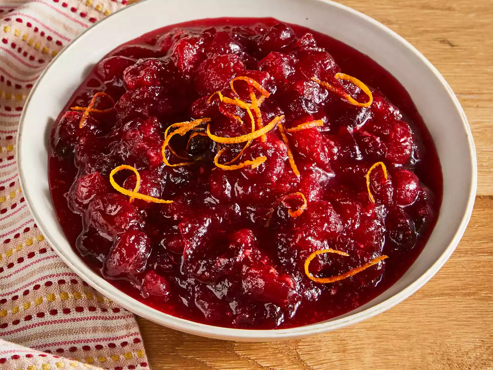

Cranberry Sauce

How to Make a Cranberry Sauce
This cranberry sauce recipe uses fresh cranberries, sugar, and orange juice to make a Thanksgiving classic.
Cranberry Sauce ingredients
Believe it or not, this homemade cranberry sauce comes together quickly and easily with just three easy-to-find ingredients. Here's what you'll need:
- Fresh Cranberries
- Sugar
- Orange Juice
How to Make Cranberry Sauce Step-By-Step>
Here's a very brief overview of what you can expect when you make homemade Cranberry Sauce:
- Gather all ingredients.
- Dissolve sugar in the orange juice in a medium saucepan over medium heat.
- Stir in the cranberries and cook until they start to pop, about 10 minutes.
- Remove from heat and place sauce in a bowl. It will thicken as it cools.
- Enjoy!